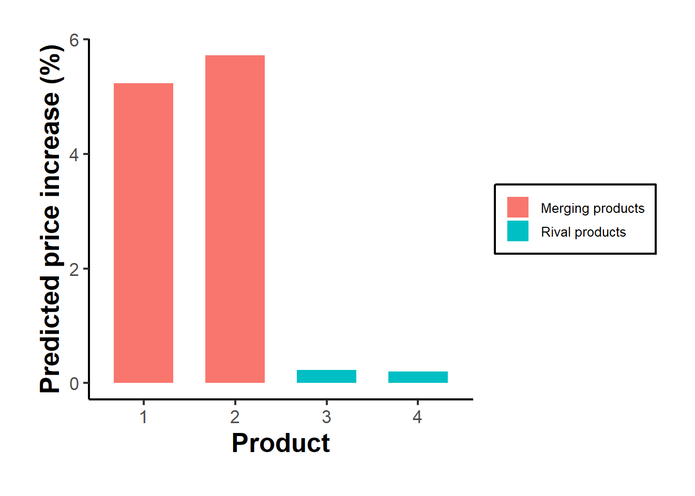

Chapter 66 Markups, Market Power, and Mergers
The chapters on production and productivity and on structural demand estimation develop two halves of the same apparatus. The production chapter recovers technology and the elasticity of output with respect to each input, while the demand chapter recovers the elasticities of demand that govern how consumers respond to price. This chapter shows that each of those objects, taken together with a single behavioral assumption about how firms set prices, identifies the markup of price over marginal cost. The markup is the empirical fingerprint of market power, and the same machinery that measures it also predicts how prices move when the ownership structure of an industry changes through a merger.
The plan is to define market power precisely, then to present the two leading empirical strategies for measuring it. The production approach reads markups off a firm’s cost-minimizing input choices and requires no demand model (De Loecker and Warzynski 2012). The demand approach reads markups off estimated demand elasticities and an assumption of oligopoly pricing, and is the natural continuation of the BLP machinery in the demand chapter. Both strategies rest on assumptions about firm conduct that are themselves testable, so the chapter turns next to the identification of conduct, distinguishing competition from collusion. It closes with the antitrust application that motivates much of the literature: predicting the price effect of a horizontal merger, first through the lightweight screen of upward pricing pressure and then through a full merger simulation.
66.1 Market Power and the Lerner Index
A firm with market power prices above marginal cost. The standard scalar summary of how far above is the Lerner index, the markup expressed as a fraction of price,
\[ L = \frac{p - c}{p}, \]
where \(p\) is price and \(c\) is marginal cost. For a single-product firm maximizing profit against a demand curve, the first-order condition equates marginal revenue to marginal cost and delivers the textbook identity
\[ L = \frac{p - c}{p} = -\frac{1}{\varepsilon}, \]
in which \(\varepsilon\) is the own-price elasticity of demand, a negative number. The Lerner index is therefore the reciprocal of the absolute elasticity: a firm facing very elastic demand prices close to marginal cost and earns a Lerner index near zero, while a firm facing inelastic demand sustains a large gap between price and cost. Perfect competition is the limiting case \(L = 0\), and pure monopoly over a product with elasticity near one drives \(L\) toward its upper bound.
The difficulty that animates the entire literature is that neither term in the numerator of the Lerner index is observed. Price is typically recorded, but marginal cost is not. Firms report accounting costs, which mix fixed and variable components and are measured at the level of the firm or plant rather than the marginal unit. Marginal cost is an economic object, the derivative of the cost function at the realized output, and it must be inferred. The two approaches below differ precisely in what they assume in order to make that inference. The production approach infers marginal cost from the firm’s input choices under cost minimization. The demand approach infers it from the firm’s pricing choices under profit maximization. Neither requires the analyst to measure marginal cost directly, and that is their shared appeal.
66.2 The Production Approach to Markups
De Loecker and Warzynski (2012) observed that cost minimization alone, without any assumption about how the firm sets price or what demand it faces, pins down the markup. The argument requires only that the firm minimizes the cost of producing its chosen output and that at least one input is flexible, meaning it can be adjusted freely within the period in response to shocks and is free of adjustment costs.
Consider a production function \(Q = Q(\mathbf{X}, \omega)\) relating output to inputs \(\mathbf{X}\) and productivity \(\omega\), the object the production chapter estimates. Let \(V\) be a flexible input with price \(P^V\). The firm’s cost-minimization problem yields a first-order condition that equates the marginal product of the flexible input, valued at the shadow price of output, to the input’s price. Manipulating that condition produces the central result. Define the output elasticity of the flexible input,
\[ \theta^V = \frac{\partial Q}{\partial V}\frac{V}{Q}, \]
and the share of the flexible input in total sales revenue,
\[ \alpha^V = \frac{P^V V}{P Q}. \]
The markup, defined here as the ratio of price to marginal cost \(\mu = p / c\), equals the ratio of these two quantities,
\[ \mu = \frac{\theta^V}{\alpha^V}. \]
The logic is transparent once stated. Under perfect competition the flexible input is paid its marginal revenue product, so its revenue share exactly equals its output elasticity and the ratio is one. When the firm has market power, it restricts output and so uses less of the flexible input than the competitive benchmark, which drives the revenue share below the output elasticity and lifts the ratio above one. The wedge between the technological elasticity and the accounting revenue share is the markup. The Lerner index follows immediately as \(L = 1 - 1/\mu = (\mu - 1)/\mu\).
The strength of this approach is its parsimony of behavioral assumptions. It needs no demand system, no instruments for price, and no assumption about whether firms compete in prices or quantities or collude. It needs an estimate of the output elasticity, which the production chapter supplies, and a revenue share, which is read directly from firm accounts. The cost is that it leans entirely on the production-function estimate. The elasticity \(\theta^V\) must be estimated consistently, which requires confronting the simultaneity between input choices and unobserved productivity that the proxy-variable and dynamic-panel estimators of the production literature are designed to solve. It also requires that the analyst correctly designates which input is flexible. Designating a quasi-fixed input as flexible, or ignoring adjustment costs and overhead in the chosen input, biases the implied markup.
De Loecker et al. (2020) applied this method to the universe of publicly listed United States firms over several decades and reported that the sales-weighted average markup rose substantially from 1980 onward, with the increase concentrated in the upper tail of the markup distribution. They linked the rise to declining labor and investment shares and to increasing concentration, framing it as evidence of a broad increase in market power with macroeconomic consequences. The finding provoked an active debate. Critics questioned the treatment of selling, general, and administrative expenses as fixed rather than variable, the use of a common output elasticity across firms, the role of measurement in the cost of goods sold, and the inference from listed firms to the whole economy. The episode is a useful caution: the production approach is only as credible as the production-function estimate and the flexibility assumption behind it, and the headline aggregate is sensitive to choices that look innocuous. The method is powerful precisely because it asks so little of behavior, but that same parsimony places the full weight of identification on the technology estimate.
66.3 The Demand Approach to Markups
The complementary strategy infers markups from the demand side. If the analyst has estimated a demand system, as in the structural demand chapter, the matrix of demand elasticities is known, and an assumption about firm conduct converts those elasticities into markups through the firms’ first-order conditions. The leading conduct assumption is Bertrand-Nash competition in prices among multiproduct firms.
Let market \(t\) contain products with share vector \(s_t\), price vector \(p_t\), and marginal cost vector \(c_t\). Let \(\Omega_t\) be the ownership matrix, with a one in entry \((j, k)\) when products \(j\) and \(k\) are owned by the same firm and a zero otherwise, and let \(\partial s_t / \partial p_t\) be the matrix of share derivatives implied by the demand estimates. The vector of profit-maximizing first-order conditions, stacked across all products, can be written
\[ p_t = c_t + \left( \Omega_t \odot \frac{\partial s_t}{\partial p_t} \right)^{-1} s_t, \]
where \(\odot\) is the elementwise product. The second term on the right is the vector of markups. Because the demand derivatives are known from estimation and the ownership matrix is known from the data, the markup vector is computed directly, and marginal cost is recovered as the residual \(c_t = p_t - \text{markup}_t\). No cost data are used at any point. The markup chapter in the demand cluster carries out exactly this inversion on simulated BLP data, including a merger counterfactual, so the present chapter develops a deliberately small logit version to keep the mechanics in view rather than repeating the full random-coefficients treatment.
The two approaches make different bets. The production approach bets on the technology and refuses to model demand or conduct. The demand approach bets on the demand system and on the conduct assumption, and in exchange recovers the entire matrix of own and cross markups, which is what merger analysis requires. When data permit both, comparing the markups they imply is a valuable specification check: agreement is reassuring, and disagreement points to a failure of the flexibility assumption, the demand model, or the conduct assumption.
66.4 Computing Markups Two Ways
The following code makes both formulas concrete on simulated data. We first build a single firm whose technology and input choices are known, compute its markup from the production formula \(\theta^V / \alpha^V\), and confirm that the value equals the markup we built in. We then build a small differentiated-products market with logit demand and single-product firms, solve the Bertrand-Nash first-order conditions, and recover the markup from the demand side. The two blocks are independent illustrations of the two strategies rather than two estimates of the same object.
set.seed(466)
# Production approach on a Cobb-Douglas firm with a flexible input V.
# True technology: Q = exp(omega) * V^theta_V * K^theta_K, so the output
# elasticity of V is theta_V exactly. We impose a known markup mu_true and
# let the firm choose V by its (distorted) first-order condition, which
# pins down the revenue share alpha_V = theta_V / mu_true.
theta_V <- 0.60 # true output elasticity of the flexible input
mu_true <- 1.35 # true markup (price / marginal cost)
# Under cost minimization with markup mu, the revenue share of the flexible
# input is its output elasticity divided by the markup.
alpha_V <- theta_V / mu_true
# The De Loecker-Warzynski estimator: markup = output elasticity / revenue share.
mu_hat <- theta_V / alpha_V
c(theta_V = theta_V, alpha_V = round(alpha_V, 4),
mu_true = mu_true, mu_hat = round(mu_hat, 4),
lerner = round((mu_hat - 1) / mu_hat, 4))
#> theta_V alpha_V mu_true mu_hat lerner
#> 0.6000 0.4444 1.3500 1.3500 0.2593The recovered markup reproduces the value we imposed, and the implied Lerner index says that roughly a quarter of price is margin over marginal cost. In a real application the elasticity theta_V is not known but estimated from a production function, with all the attendant simultaneity concerns, and the revenue share is read from firm accounts. The arithmetic linking the two to the markup is exactly the line above.
Now the demand approach. We construct a market with logit demand, in which the share of product \(j\) is \(s_j = \exp(\delta_j) / (1 + \sum_k \exp(\delta_k))\) with mean utility \(\delta_j = x_j'\beta - \alpha p_j\). For logit demand the own-price derivative is \(\partial s_j / \partial p_j = -\alpha s_j (1 - s_j)\) and the cross derivative is \(\partial s_j / \partial p_k = \alpha s_j s_k\). With single-product firms the ownership matrix is the identity and each firm’s markup solves the scalar first-order condition, giving the closed form \(\text{markup}_j = 1 / [\alpha (1 - s_j)]\).
# Demand approach: logit demand, single-product Bertrand-Nash firms.
alpha <- 1.5 # price sensitivity
x <- c(1.0, 1.4, 0.8, 1.2) # one observed characteristic per product
xi <- c(0.2, -0.1, 0.0, 0.1) # unobserved quality
mc <- c(0.9, 1.1, 0.7, 1.0) # marginal costs (known here by construction)
J <- length(x)
logit_shares <- function(delta) {
e <- exp(delta)
e / (1 + sum(e))
}
# Solve for equilibrium prices: p = mc + 1 / (alpha (1 - s_j(p))).
foc_resid <- function(p) {
delta <- x - alpha * p + xi
s <- logit_shares(delta)
markup <- 1 / (alpha * (1 - s))
p - (mc + markup)
}
sol <- nleqslv::nleqslv(rep(2, J), foc_resid)
p_eq <- sol$x
delta <- x - alpha * p_eq + xi
s_eq <- logit_shares(delta)
markup_d <- 1 / (alpha * (1 - s_eq))
demand_tab <- data.frame(
product = seq_len(J),
price = round(p_eq, 3),
share = round(s_eq, 3),
markup = round(markup_d, 3),
lerner = round(markup_d / p_eq, 3)
)
demand_tab
#> product price share markup lerner
#> 1 1 1.671 0.135 0.771 0.461
#> 2 2 1.852 0.114 0.752 0.406
#> 3 3 1.461 0.124 0.761 0.521
#> 4 4 1.766 0.129 0.766 0.434| Product | Price | Share | Markup | Lerner index |
|---|---|---|---|---|
| 1 | 1.671 | 0.135 | 0.771 | 0.461 |
| 2 | 1.852 | 0.114 | 0.752 | 0.406 |
| 3 | 1.461 | 0.124 | 0.761 | 0.521 |
| 4 | 1.766 | 0.129 | 0.766 | 0.434 |
The markup recovered here is an absolute margin \(p - c\) rather than the ratio \(p/c\) of the production formula, and the Lerner index in the final column converts it to the comparable scale. Products with larger shares carry larger markups, which is the logit signature: a product that captures more of the market faces less elastic residual demand and so sustains a wider margin. The same inversion, applied with the full matrix of cross-price derivatives and a non-identity ownership matrix, is what powers the merger simulation below.
66.5 Testing Firm Conduct
Both markup strategies rely on a maintained assumption about conduct. The demand approach above imposed Bertrand-Nash pricing; a different assumption, such as collusion or Cournot competition, would invert the same demand elasticities into different markups and different marginal costs. Conduct is therefore not innocuous, and a central question of empirical industrial organization is whether it can be identified from data rather than assumed.
The classical device is the conduct parameter. Bresnahan (1982) showed that the degree of market power can be identified by augmenting the supply relation with a parameter that nests the leading models. Write the industry supply relation as price equal to marginal cost plus a wedge proportional to a conduct parameter \(\lambda\) times the demand slope,
\[ p = c(Q) + \lambda \cdot \frac{Q}{|\partial Q / \partial p|}, \]
where \(\lambda = 0\) corresponds to perfect competition, \(\lambda = 1\) to monopoly or perfect collusion, and intermediate values to oligopoly. Bresnahan’s insight is that \(\lambda\) is identified when the data contain variables that rotate the demand curve, not merely shift it. A demand shifter that changes the intercept moves price and quantity along the supply relation and cannot separate marginal cost from the conduct wedge. A demand rotator that changes the slope, by contrast, changes the markup the conduct parameter implies without changing marginal cost, and so traces out conduct. The requirement of a rotator, not just a shifter, is the heart of the identification result and a recurring theme in the conduct literature.
In differentiated-products markets the conduct question becomes which ownership and behavioral matrix generated the observed prices. Nevo (2001) estimated demand for ready-to-eat cereals and then computed the markups implied by several competing conduct assumptions, comparing them to external evidence on margins to argue that observed prices were consistent with multiproduct Bertrand-Nash pricing rather than with joint profit maximization across the industry. The logic generalizes: with an estimated demand system, each candidate conduct model implies a vector of marginal costs, and the analyst asks which implied costs are most plausible or best fit cost shifters.
The modern literature, building on Berry and Haile (2014), has put conduct testing on a firmer footing by asking formally when alternative models of conduct are distinguishable from one another given the available instruments. The key requirement parallels Bresnahan’s: instruments must rotate markups across the candidate conduct models differently, so that the models make distinguishable predictions for prices. Cost shifters and the characteristics of rival products serve this role, and recent work has developed formal tests that select among conduct models, or reject all of them, rather than imposing one. The practical lesson for markup measurement is that conduct should be tested where the data allow, and that a markup estimate inherits whatever credibility the maintained conduct assumption has earned.
66.6 Merger Analysis
The most consequential application of these tools is the evaluation of horizontal mergers. When two firms that sell substitute products combine, the merged entity internalizes the competition that previously existed between them. Before the merger, a price increase on one product drove some customers to the other, a loss the independent owner ignored; after the merger, those diverted sales are captured by the same owner, weakening the incentive to compete on price. The structural question is how large the resulting price increase will be, and whether claimed cost efficiencies offset it.
66.6.1 Upward Pricing Pressure
Farrell and Shapiro (2010) proposed a screen that captures the core incentive without simulating a full equilibrium. The idea is to measure the net upward pressure on the price of one merging product created by combining ownership. Two quantities drive it. The first is the diversion ratio \(D_{12}\), the fraction of sales lost by product 1 when its price rises that are recaptured by product 2,
\[ D_{12} = \frac{-\partial s_2 / \partial p_1}{\partial s_1 / \partial p_1}, \]
a number between zero and one that measures how close a substitute product 2 is for product 1. The second is the margin on the recapturing product, \(m_2 = p_2 - c_2\), which values each diverted sale. Their product, \(D_{12} \, m_2\), is the gross upward pricing pressure on product 1: the per-unit incentive to raise the price of product 1 because some of the lost sales now flow to a commonly owned product earning margin \(m_2\). Efficiencies push in the other direction. If the merger lowers the marginal cost of product 1 by an amount \(E_1\), the net upward pricing pressure is
\[ \text{UPP}_1 = D_{12} \, m_2 - E_1. \]
A positive value signals that the merger creates pressure to raise the price of product 1 and flags the merger for closer scrutiny; a negative value suggests the efficiencies dominate. The appeal of the index is that it requires only diversion ratios, margins, and an efficiency assumption, all of which can be estimated or assumed without a full demand system, which makes it a practical first screen. Miller et al. (2017a) examined how well UPP and related first-order approximations predict the price effects that full merger simulations deliver, and found that the simple indices are informative predictors of the direction and rough magnitude of merger price effects, while cautioning that they are approximations whose accuracy depends on the curvature of demand. The index is a screen, not a verdict.
# UPP / diversion-ratio screen for a proposed merger of products 1 and 2,
# reusing the equilibrium from the demand-side block above.
dSdp <- function(p) {
delta <- x - alpha * p + xi
s <- logit_shares(delta)
D <- diag(-alpha * s * (1 - s)) # own derivatives
for (j in 1:J) for (k in 1:J) if (j != k) D[j, k] <- alpha * s[j] * s[k]
D
}
Dmat <- dSdp(p_eq)
margins <- p_eq - mc
# Diversion ratio from product 1 to product 2: share of 1's lost sales
# recaptured by 2 when p1 rises.
D12 <- -Dmat[2, 1] / Dmat[1, 1]
D21 <- -Dmat[1, 2] / Dmat[2, 2]
efficiency <- 0.05 # assumed marginal-cost saving on each merging product
upp_1 <- D12 * margins[2] - efficiency * mc[1]
upp_2 <- D21 * margins[1] - efficiency * mc[2]
upp_tab <- data.frame(
product = c(1, 2),
diversion_to_partner = round(c(D12, D21), 3),
partner_margin = round(c(margins[2], margins[1]), 3),
gross_upp = round(c(D12 * margins[2], D21 * margins[1]), 3),
net_upp = round(c(upp_1, upp_2), 3)
)
upp_tab
#> product diversion_to_partner partner_margin gross_upp net_upp
#> 1 1 0.131 0.752 0.099 0.054
#> 2 2 0.152 0.771 0.117 0.062| Product | Diversion to partner | Partner margin | Gross UPP | Net UPP (after efficiency) |
|---|---|---|---|---|
| 1 | 0.131 | 0.752 | 0.099 | 0.054 |
| 2 | 0.152 | 0.771 | 0.117 | 0.062 |
Both products show positive net upward pricing pressure, so the screen flags the merger for the closer analysis that a full simulation provides.
66.6.2 Merger Simulation
The full structural prediction replaces the screen with an equilibrium computation. The merger changes nothing about demand or marginal cost; it changes only the ownership matrix \(\Omega_t\). Before the merger every firm owns one product and \(\Omega\) is the identity. After the merger of products 1 and 2, the block linking those two products becomes one, encoding that a single owner now internalizes the cross effects between them. The post-merger prices solve the same Bertrand-Nash first-order conditions as before, but with the new ownership matrix, and the price increase is the difference between the new equilibrium and the old.
# General Bertrand-Nash solver for any ownership matrix Omega.
# FOC in matrix form: p = mc + (Omega * dSdp')^{-1} s.
# We work with the transpose convention so that entry (j,k) of the relevant
# matrix is d s_k / d p_j; for logit this matrix is symmetric, so dSdp suffices.
eq_prices <- function(Omega, p_start = rep(2, J)) {
resid <- function(p) {
delta <- x - alpha * p + xi
s <- logit_shares(delta)
D <- dSdp(p)
markup <- solve(Omega * D) %*% (-s) # (Omega o dS/dp)^{-1} s, signs aligned
as.numeric(p - (mc + markup))
}
nleqslv::nleqslv(p_start, resid)$x
}
Omega_pre <- diag(J) # single-product firms
Omega_post <- Omega_pre
Omega_post[1, 2] <- Omega_post[2, 1] <- 1 # products 1 and 2 now share an owner
p_pre <- eq_prices(Omega_pre)
p_post <- eq_prices(Omega_post, p_start = p_pre)
merger_tab <- data.frame(
product = seq_len(J),
price_pre = round(p_pre, 3),
price_post = round(p_post, 3),
change = round(p_post - p_pre, 3),
pct_change = round(100 * (p_post - p_pre) / p_pre, 2)
)
merger_tab
#> product price_pre price_post change pct_change
#> 1 1 1.671 1.758 0.087 5.23
#> 2 2 1.852 1.958 0.106 5.72
#> 3 3 1.461 1.464 0.003 0.23
#> 4 4 1.766 1.769 0.003 0.20| Product | Pre-merger price | Post-merger price | Price change | Percent change |
|---|---|---|---|---|
| 1 | 1.671 | 1.758 | 0.087 | 5.23 |
| 2 | 1.852 | 1.958 | 0.106 | 5.72 |
| 3 | 1.461 | 1.464 | 0.003 | 0.23 |
| 4 | 1.766 | 1.769 | 0.003 | 0.20 |
The two merging products rise most in price, because their common owner now internalizes the competition between them, while the non-merging products rise by less through the strategic complementarity of prices: as the merged products become more expensive, rivals find it profitable to raise their own prices a little too. Figure 66.1 displays the pattern.
library(ggplot2)
plot_df <- transform(
merger_tab,
merging = ifelse(product %in% c(1, 2), "Merging products", "Rival products")
)
ggplot(plot_df, aes(x = factor(product), y = pct_change, fill = merging)) +
geom_col(width = 0.65) +
labs(x = "Product", y = "Predicted price increase (%)", fill = NULL) +
causalverse::ama_theme()
Figure 66.1: Predicted percentage price increases by product following the merger of products 1 and 2. The merging products rise most; rivals rise modestly through strategic complementarity.
The simulation predicts price increases without any cost data and without observing the merger: everything follows from the estimated demand elasticities and the change in ownership. Two caveats matter for practice. First, the prediction is only as good as the demand model and the conduct assumption behind the first-order conditions, which is why the conduct testing of the previous section is a prerequisite rather than an afterthought. Second, the simulation as written holds marginal cost fixed, so it ignores efficiencies. Merging parties routinely claim that the combination lowers marginal cost, and a credible analysis incorporates a marginal-cost reduction into the post-merger problem and asks how large an efficiency would be needed to undo the predicted price increase. The UPP screen is the linearized version of exactly that question.
Finally, the predictions of merger simulation are testable after the fact. A merger retrospective compares the prices that actually prevailed after a consummated merger with the counterfactual of no merger, using control markets or a difference-in-differences design of the kind developed in the chapter on difference-in-differences. The accumulated evidence from retrospectives disciplines the simulation models, revealing when they over or underpredict and why, and feeds back into the credibility of the structural approach to antitrust. The cycle of structural prediction and reduced-form retrospective is the empirical economics of market power at its most complete: a model that predicts, a design that checks, and a literature that updates the model when the check disagrees.
66.7 The Frontier of Conduct Testing
The conduct parameter of the previous section poses the question, but modern practice answers it differently. The discipline of validating conduct tests against direct evidence was set early: matching estimated conduct in the sugar industry against actual marginal-cost data confirmed that the conduct-parameter approach recovers the true competitive regime when it can be checked (Genesove and Mullin 1998), just as the classic test of the 1955 automobile price war distinguished a competitive episode from surrounding cooperation (Bresnahan 1987). The frontier reframes conduct evaluation as model selection between non-nested hypotheses rather than estimation of a single parameter. The Rivers-Vuong test compares two candidate conduct models, allowing that both may be misspecified (Rivers and Vuong 2002), and the modern treatment shows that the test degenerates exactly when the instruments are weak for testing, supplying a practical weak-instrument diagnostic for falsifying models of firm conduct (Duarte et al. 2024). The deeper question of whether conduct is identified at all is settled by the nonparametric identification results for differentiated-products markets, which establish that the supply side and the conduct it embodies are identified as a corollary of demand identification under the connected-substitutes structure and suitable instruments (Berry and Haile 2014). A live application of this machinery is common ownership: the rise of overlapping institutional shareholders changes the objective function firms maximize, and the profit-weight measures that quantify it map directly into the conduct framework (Backus et al. 2021), while estimated conduct parameters in the airline industry suggest that multimarket contact softens competition (Ciliberto and Williams 2014).
66.8 Pass-Through and the First-Order Approach
The upward pricing pressure screen is the leading edge of a broader first-order approach to merger analysis. Its logic is that the price effect of a merger, or of any cost change, is governed locally by the rate at which cost changes pass through to price. The first-order approach formalizes this by converting upward pricing pressure into predicted price changes through the pass-through matrix, which depends on the curvature of demand (Jaffe and Weyl 2013), and the general theory of incidence under imperfect competition supplies the pass-through rates that do the work (Weyl and Fabinger 2013). The practical payoff is twofold. First, observed pass-through disciplines the choice of demand system, because the curvature that governs pass-through is exactly what makes merger simulations sensitive to functional form, and matching observed pass-through improves the accuracy of the price predictions; the conditions under which the simple GUPPI screen approximates the full simulation are now well mapped (Miller et al. 2017b). Second, the diversion ratios that drive the screen must themselves be measured carefully, since how they are defined and aggregated materially changes the conclusion (Conlon and Mortimer 2021). The first-order approach is attractive precisely because it asks for less than a full structural model while remaining grounded in the same equilibrium logic.
66.9 Coordinated Effects, Bargaining, and Vertical Mergers
The unilateral-effects analysis above assumes prices are set by posted-price Bertrand competition, but two important settings break that assumption. The first is coordinated effects, where a merger facilitates tacit collusion rather than merely changing unilateral incentives. The leading structural test rejects simple Nash-Bertrand pricing after the MillerCoors joint venture in favor of partial coordination, showing that the coordinated channel can be identified and is quantitatively important (Miller et al. 2017a). The second is bargaining, which governs prices in business-to-business and healthcare markets where prices are negotiated rather than posted. The Nash-in-Nash framework embeds bilateral bargaining between, for instance, hospitals and insurers, and shows how a merger shifts bargaining leverage and raises negotiated prices (Gowrisankaran et al. 2015; Ho and Lee 2017), building on the option-demand willingness-to-pay framework that underpins modern hospital analysis (Capps et al. 2003). The same bargaining machinery is the right tool for vertical mergers, where the concern is foreclosure and the offsetting elimination of double marginalization. Structural evaluations of vertical integration in gasoline retailing (Hastings 2004), cement and concrete (Hortacsu and Syverson 2007), and multichannel television (Crawford et al. 2018) find that the net effect is an empirical question, with raising-rivals-cost incentives weighed against real efficiencies, and a vertical Nash-in-Nash simulation methodology now makes such mergers as tractable as horizontal ones (Sheu and Taragin 2021).
66.10 Merger Retrospectives and the Validation of Structural Models
Because merger simulation makes a falsifiable prediction, a large retrospective literature checks those predictions against what actually happened. Difference-in-differences studies of consummated mergers on the enforcement margin find that most raised prices (Ashenfelter and Hosken 2010), including a closely studied appliance merger that raised prices modestly despite high post-merger concentration (Ashenfelter et al. 2013). Studies that compare predicted with realized prices reach a consistent verdict: merger simulation captures the direction of price effects reliably but its magnitude is sensitive to the demand model and to omitted changes in marginal cost and conduct, as documented for airlines (Peters 2006), for a Swedish pharmaceutical merger where simulation overstated the increase (Bjornerstedt and Verboven 2016), and in broader assessments of simulation accuracy (Weinberg and Hosken 2013). In hospital markets, where bargaining and option demand dominate, structural willingness-to-pay screens predict anticompetitive mergers far better than concentration measures alone (Dafny 2009; Garmon 2017). The lesson for practice is that structural prediction and reduced-form retrospective are complements: the retrospective disciplines the model, and the model explains the retrospective, which together is why the demand systems of Chapter 60, estimated on data such as the cereal market of Nevo (2000b) or the differentiated automobile and new-product markets (Berry et al. 2004; Petrin 2002), remain the evidentiary standard in antitrust even as their assumptions are continually tested.